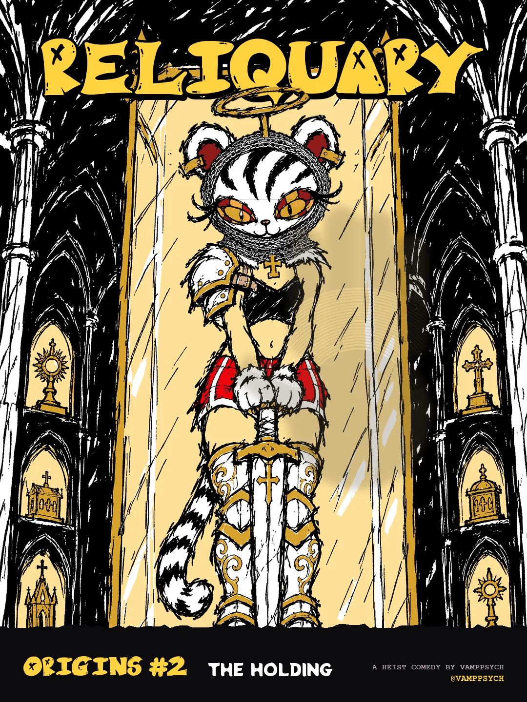
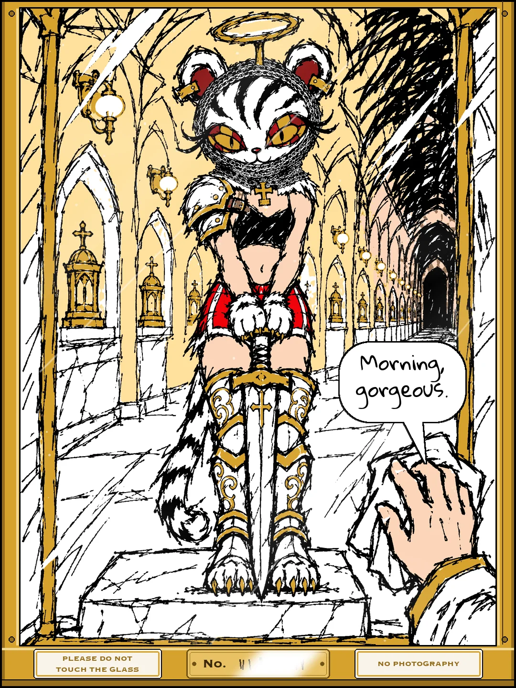
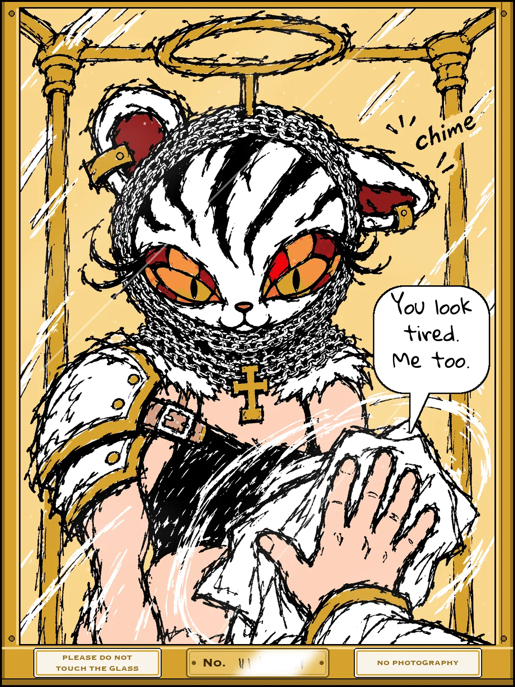
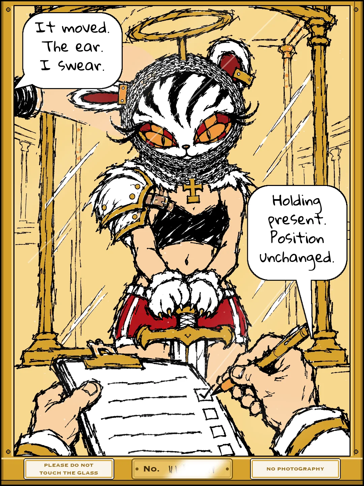
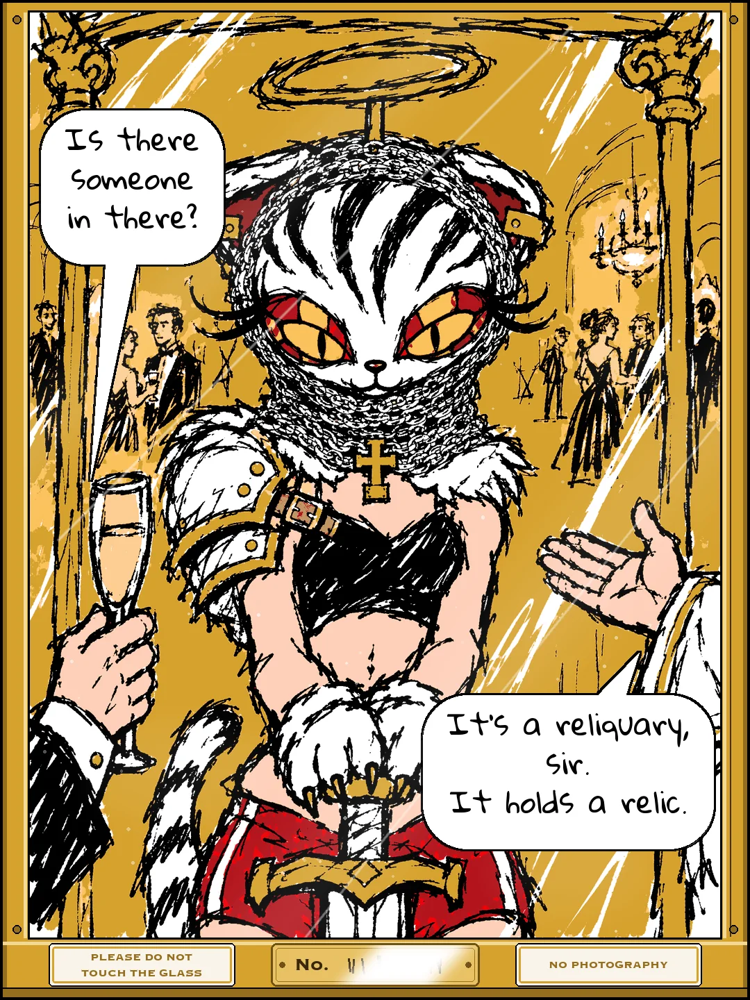
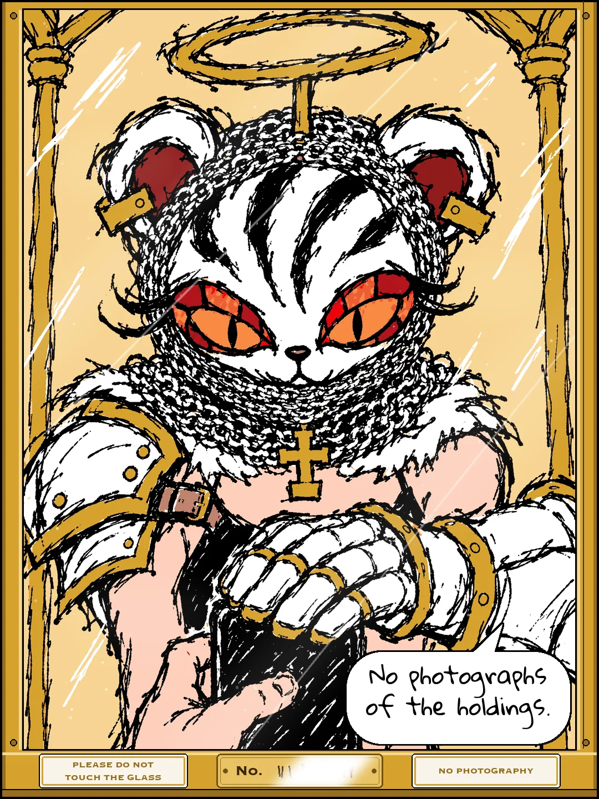
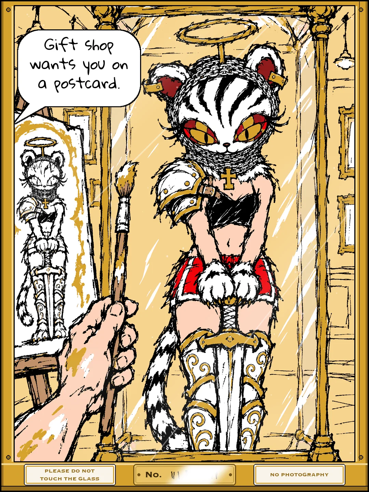
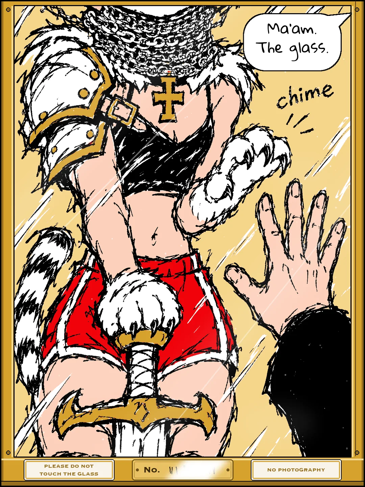
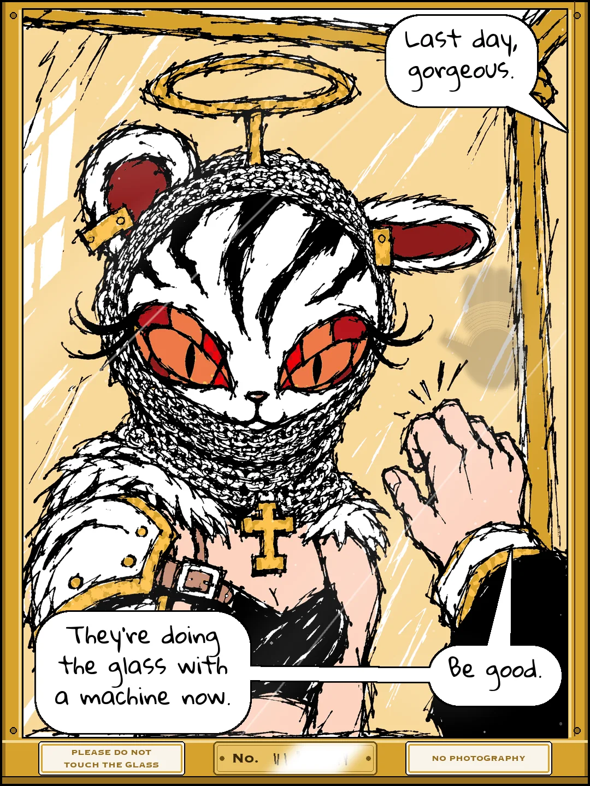
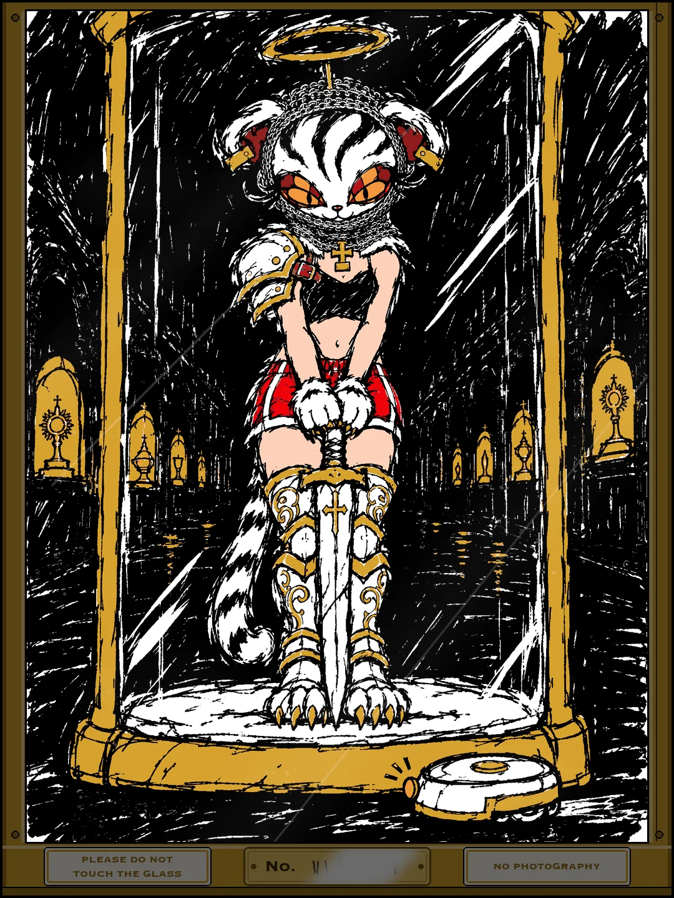
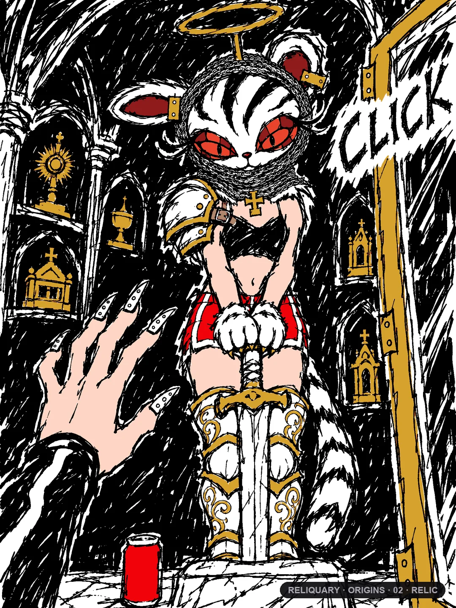

A MANHWA · ORIGINS #2
RELIC · THE HOLDING
everybody looked at her. nobody saw her 🐯
The cover, 10 slides through the glass of her case, the back. Read it top to bottom.











END OF ORIGINS #2
The first hand to ever reach past the glass was Kuro's. That night is Episode 1.